Reservar Veículo: arte aprovada x implementação real
Esquerda: arte (design-v2/usr002). Direita: captura real da tela /trips/new (Playwright, dados reais, org descartável). Sem fotos de carros, avaliações, Match % ou filtro "Automático": a base não tem esses dados.
1. Com caronas compatíveis (art06-web)
Arte art06-web.pngImplementado 05-desktop-1440-carpool-and-vehicles.png
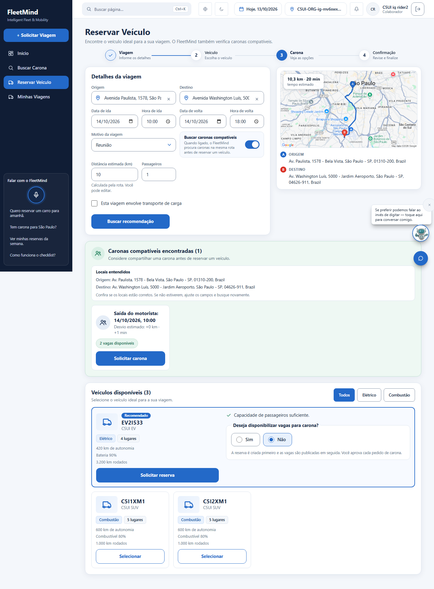
Mesma tela, só a primeira dobra
Arte art06-web.pngImplementado 05v-desktop-1440-carpool-viewport.png
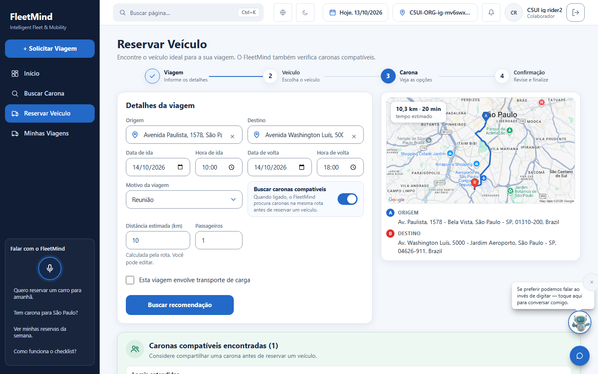
2. Sem caronas na rota (art04-web)
Arte art04-web.pngImplementado 04-desktop-1440-no-carpool-vehicles.png
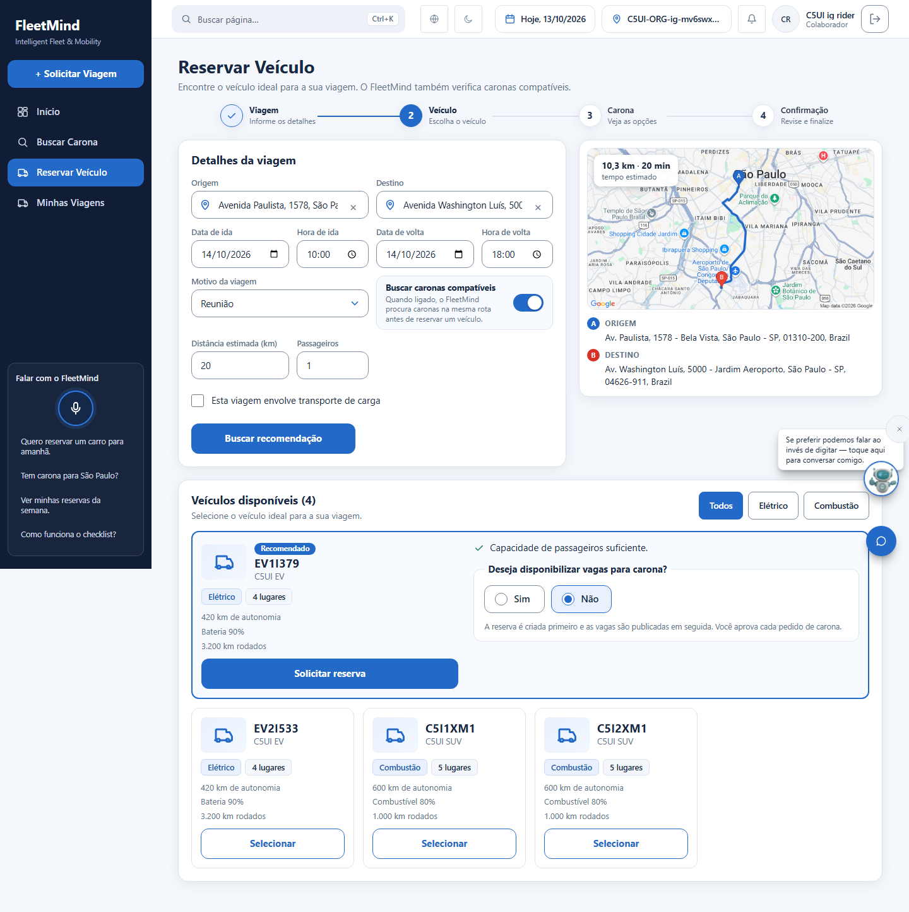
3. Mobile 390 (art06-mobile / art04-mobile)
Arte art06-mobile.pngImplementado, formulário 07-mobile-390-form-viewport.png
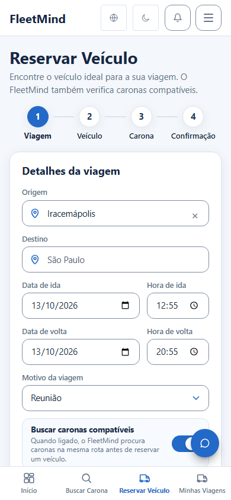
Arte art04-mobile.pngImplementado, veículos 09-mobile-390-vehicles-viewport.png
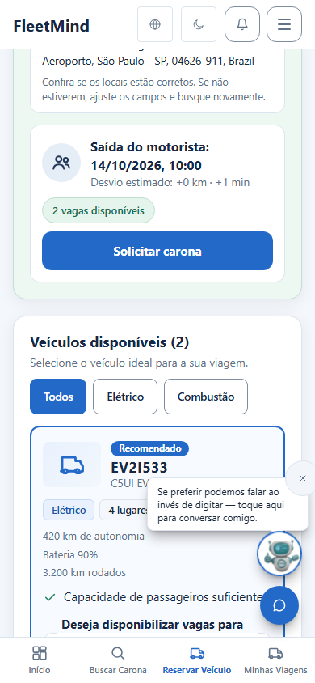
Implementado, tela inteira 08-mobile-390-full.png
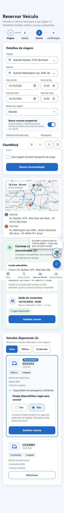
4. Autocomplete de endereços (Google Places) e busca global
Sugestões ao digitar 10-desktop-autocomplete-open.png
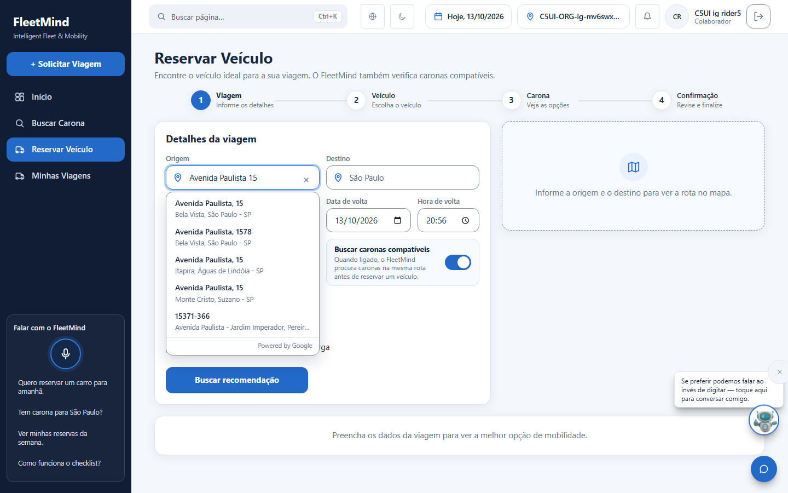
Ponto corporativo primeiro 11-desktop-autocomplete-point-first.png
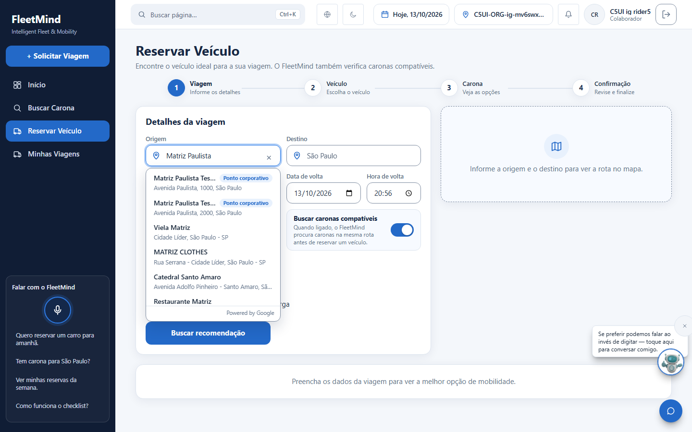
Busca global Ctrl+K 02-desktop-global-search.png
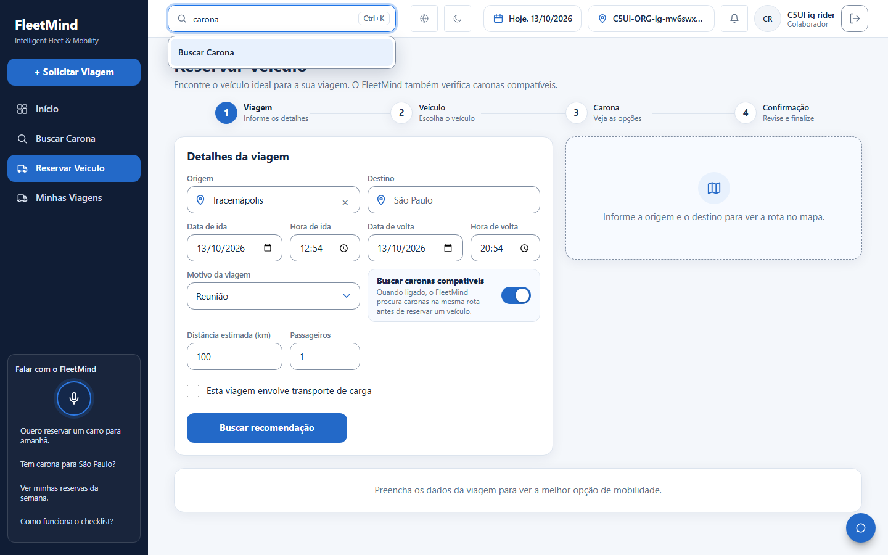
Mapa no topo, ao lado do formulário 03-desktop-1440-map-top.png
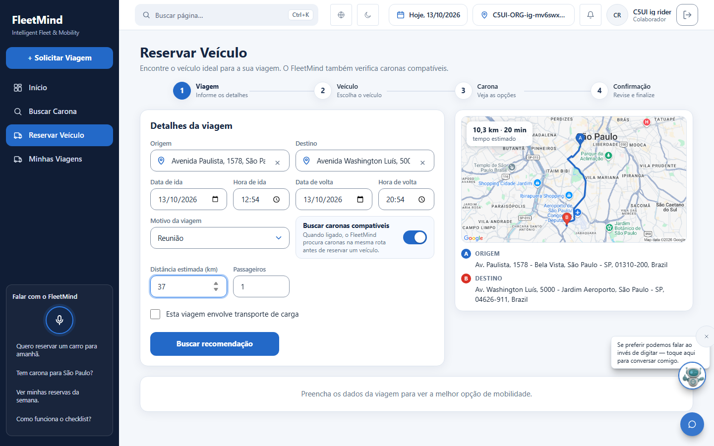
4b. Mobile 390: lista aberta sem cobrir a barra inferior / botão do chat; política de carona desligada (sem o toggle)
Autocomplete aberto no mobile 13-mobile-390-autocomplete-open.pngOrg com carona desligada 14-desktop-carpool-off-no-toggle.png
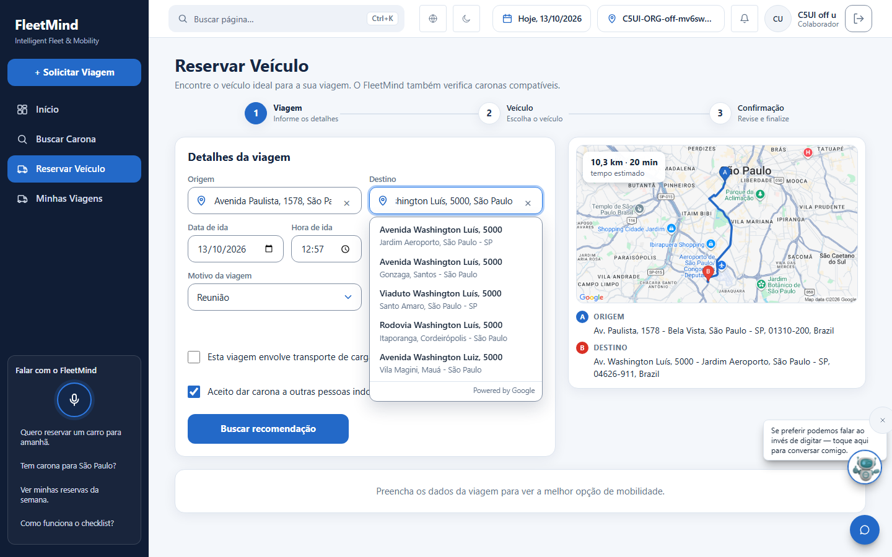
5. Larguras intermediárias e queda do provedor
1100 px 06-width-1100.png
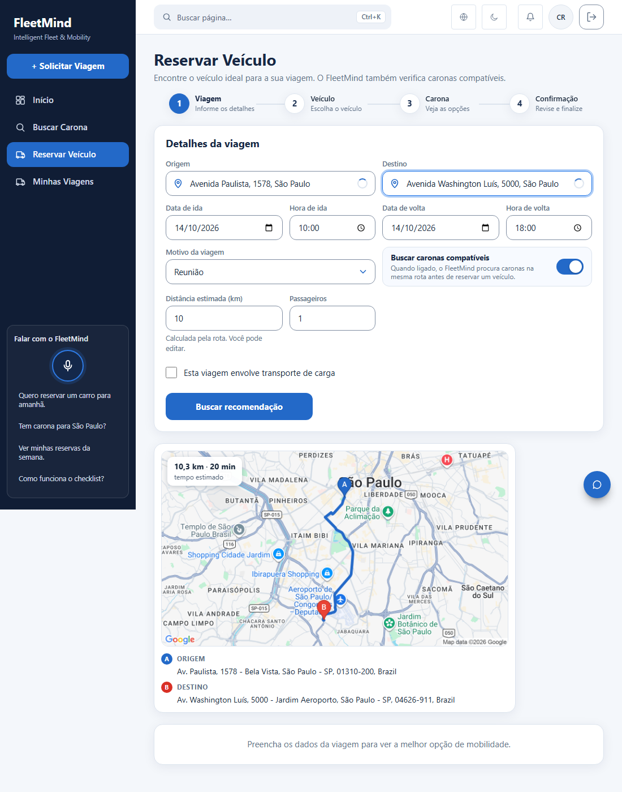
820 px 06-width-820.png
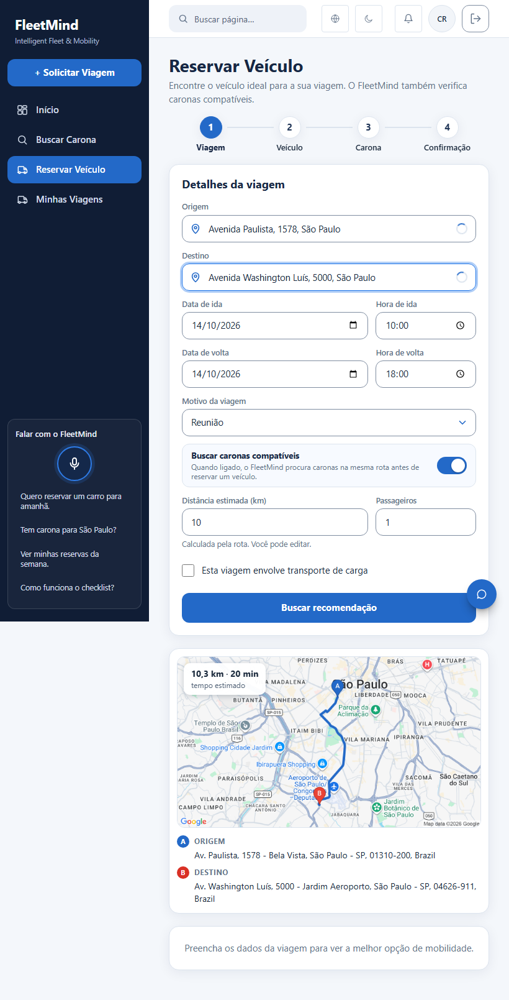
Provedor Google fora do ar (chave inválida) 12-desktop-outage.png